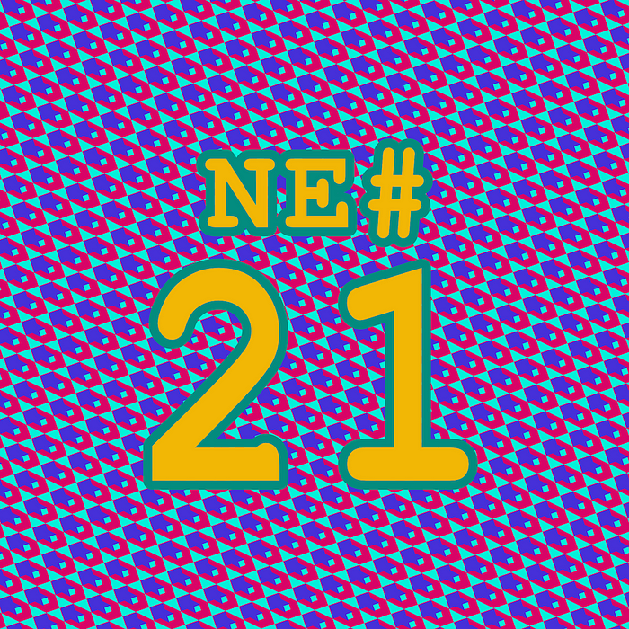
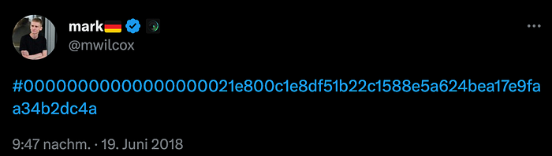
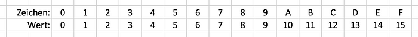
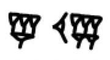

Die Nerd Enzyklopädie 21 - 00000000000000000021e800c1e8df51b22c1588e5a624bea17e9faa34b2dc4a

Bei dieser Zeichenkette handelt es sich um einen Hash, der im Sommer 2018 durch die „internet’sche Bitcoin-Blase“ geisterte. Wer verstehen will wie anfällig die Bitcoin-Szene für aufmerksamkeitsgenerierende Effekthascherei ist, der sollte sich mit diesem Hash beschäftigen:

Doch bevor ich erkläre, was daran so besonders ist, zunächst ein paar Details — du willst hier ja auch etwas lernen.
Zunächst einmal die offensichtlichen Unklarheiten: Ein Hash ist eine Art Ableitung einer beliebigen Information. Das können ein Text, ein Bild oder irgendwelche anderen digitalen Daten sein. Man schiebt diese Informationen durch einen relativ komplexen Algorithmus, wie z.B. den weit verbreiteten SHA-256 (Secure Hash Algorithm 256). Das Ergebnis ist ein Hash und in der Fachsprache nennt man den Vorgang „kryptologische Hash-Funktion“. Der Hash verändert sich, sobald die eingegebene Information auch nur um ein Zeichen abweicht. Es ist äußerst selten, also wirklich sehr sehr selten, dass zwei unterschiedliche Eingaben zum gleichen Hash führen. Was immer gleich ist: Die Länge des Hashes: Er besteht aus 32 Byte wobei jedes Byte eine Größe von 8 Bit hat. 32 x 8 = 256 — du erkennst die Zusammenhänge?
„32 Byte? Das Ding da oben ist aber 64 Zeichen lang!“ wirst du jetzt vermutlich reklamieren. Korrekt. Aber warum? Es folgt ein kurzer Ausflug in die verrückte Welt der Stellenwertsysteme:
Wie kann man im binären Zahlensystem, in dem ja nur zwei Symbole zur Verfügung stehen (0 und 1), einen höheren Wert als 1 darstellen? Indem wir mehrere Stellen benutzen. Verteilt man das Symbol 1 auf 8 Stellen, kann man so den Wert 255 darstellen — wie das genau funktioniert habe ich im 1. Teil erklärt):
11111111
Im Hexadezimalsystem stehen uns 16 Symbole zur Verfügung, da wir hier nicht nur die Zahlen von 0 bis 9 sondern auch die Buchstaben von A bis F verwenden dürfen. So sieht die Zuordnung aus:

Das Hexaedzimalsystem und die Zurodnung der ersten 16 Stellen
Der Wert 255 wird folgendermaßen geschrieben:
FF
Man könnte auch ein Stellenwertsystem mit mehr als 16 Zeichen verwenden, z.B. das Sexagesimalsystem (Basis 60) der Sumerer:

Die Zeichen mögen exotisch anmutend, tatsächlich benutzen wir das System aber in unserem Alltag: In der Zeitmessung und zur Angabe von geografischen Längen und Breiten. Der Wert 255 wird hier als 4’15, also 4 Minuten und 15 Sekunden, dargestellt.
Aber zurück zu unserem Hash: Ein SHA-256 Hash besteht aus 32 Bytes in hexadezimaler Schreibweise. Und da ein Byte aus 8 Bit entsteht, benötigt die Darstellung des höchstens Wertes (nämlich FF) zwei Stellen. Damit besteht der Hash also effektiv aus 64 Zeichen. In binärer Schreibweise, also bei Verwendung von 0 und 1, hat der Hash eine Länge von 256 Zeichen und so schließt sich der Kreis!
Von der Mathematik zur Magie…
Das war ganz schön kompliziert und deswegen widmen wir uns jetzt etwas einfacherem: Was ist denn an dem Hash so besonders? Es handelt sich um den Hash eines sogenannten Blocks einer sogenannten Blockchain (und zwar der sogenannten Kryptowährung Bitcoin und dem Block mit der Nummer 528.249 [BTC1]). In 2018 führte dieser Hash zu Verwirrung und Begeisterung zugleich. Die Szene beschrieb den Hash sogar als…“magisch”. Aber warum?
Wie eben beschrieben entsteht ein Hash wenn eine bestimmte Information durch einen Algorithmus modifiziert wird. Bei der Bitcoin-Blockchain gibt es komplexe Regeln, die diese Berechnung sehr aufwendig machen. Unter anderem ist ein Hash durch eine bestimmte Anzahl führender Nullen gekennzeichnet. Dadurch entsteht eine rechnerische Schwierigkeit, die nicht nur als Voraussetzung für die Sicherheit der Blockhchain herhalten muss, sondern auch für Wettbewerb unter den Teilnehmer:innen sorgt (und auch für den oft kritisierten hohen Energieverbrauch der Bitcoin-Blockchain verantwortlich ist). Diejenige, die diese „kryptologische Aufgabe“ zuerst löst, wird belohnt. So die Kurzfassung.
Die auffällige große Anzahl führender Nullen ist aber nicht der Aufregung wert. Sie ist beeindruckend, aber keine Seltenheit. Die Aufmerksamkeit richtete sich vielmehr auf die ersten Zeichen nach den Nullen:
21E8
Hier kommt Zahlensymbolik ins Spiel. So wird die 21 gerne mit der maximal möglichen Menge von Bitcoins assoziiert, nämlich 21 Mio. Diese Grenze ist im Bitcoin-Protokoll fest verankert und wird aufgrund einiger Regeln irgendwann Anfang des nächsten Jahrhunderts erreicht.
E8 steht für die Liesche-Gruppe, ein wichtiges und gleichzeitig kompliziertes mathematisches Konstrukt, das für viele Forscher einer universellen Weltformel nahekommen soll, aber eben noch nicht tut.
Da ein Hash das Resultat einer aufwendigen mathematischen Funktion ist, kann man ihn nicht nach Belieben erzeugen, um “geheime” Botschaften zu übermitteln. Grund genug, hinter diesem besonderen Hash und der E128 eine geheime Botschaft aus der Zukunft zu vermuten, die vielleicht sogar vom Bitcoin-Erfinder Satoshi Nakamoto persönlich stammt.
Zahlreiche Portale beschäftigten sich mit dem Phänonem, es wurde darüber getwittert und Blockchain-Influencer befassten sich in aufgeregten YouTube-Clips mit dem Ereignis. Tatsächlich ist diese Kombination aber reiner Zufall, der gar nicht so unwahrscheinlich ist. Laut Andrew Miller, Assistenzprofessor an der University of Illinois, kommt es im Schnitt nämlich alle 455 Tage zu einer derartigen Erscheinung [BUSIN1]. Zuletzt beim Block 475.118 im Juli 2017 [BTC2]. Also: Viel Aufregung um nichts. Oder: Ein ganz normaler Tag in der Bitcoin-Community…